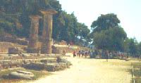

|
|
|
|
De olympiske lekene var altså en sammensmelting av idealene
fra den engelske sporten
og den klassiske greske kulturen, og da ikke minst
de klassiske lekene i Olympia. Dette gjenspeiler seg i det olympiske
charteret, der den olympiske ideologien er nedfelt, hvor det bl.a. heter:
 Alt dette ble symbolisert
gjennom
de olympiske seremoniene og ritualene som etter
hvert ble en del OL-arrangementet. Til venstre er stedet i Olympia der ilden
tennes. Coubertin tegnet selv OL-flagget med ringene som symbol på verdensdelene
i fredelig kappestrid. Gjennom mesteparten av den moderne OL-historien var
IOK særlig opptatt av amatørbestemmelsene, fordi profesjonell idrett ville
svekke de moralske kvalitetene hos idrettsfolk. Nå er dette punktet i OL-charteret
endret slik at deltakerne ikke får tjene penger på idretten sin under selve
lekene, men hvor mye de tjener for øvrig, spiller ikke noen rolle lenger
for hvem som får delta. I hvilken grad har så idrettsutøvere, arrangører,
IOK-medlemmer og andre etterlevd bestemmelsene? Her følger et høyst subjektivt
utvalg av eksempler fra OL-historien:
|
| 1896 |
En gresk maratonløper, tredjemann i mål, ble disket for å ha brukt hesteskyss. |
| 1904 |
Førstemann i mål i maraton, en amerikaner, ble avslørt etter at han hadde sittet på med ølbilen i to mil, mens han som overtok gullet, en annen amerikaner, også burde ha vært disket, da han fikk hjelp til å komme over mållinja. |
| 1908 |
Nok en gang ble førstemann i mål i maraton, en italiener, disket, ikke fordi han hadde brukt stryknin, men fordi han fikk hjelp til å komme seg i mål! 400 m måtte løpes om igjen etter protest, men alle løperne nektet - bortsett fra en brite (og han vant omløpet). |
| 1912 |
Amerikaneren Jim Thorpe mistet gullet i 5-kamp og 10-kamp fordi han hadde mottatt et mindre beløp for å ha spilt baseball, nærmest "kostpenger". 30 år etter at han døde i 1953, etter et liv preget av fattigdom og alkoholmisbruk, bl.a som en følge av diskvalifikasjonen og utestengelsen, fikk familien tilbake gullmedaljene, samtidig som nordmannen Ferdinand Bie og svensken Hugo Wieslander beholdt sin status som olympiske mestere. |
| 1916 |
Det planlagte OL i Berlin kunne ikke avholdes pga. krigen. |
| 1920 |
Taperne i første verdenskrig, Tyskland, Østerrike, Ungarn og Tyrkia, måtte holde seg hjemme. De tsjekkoslovakiske spillerne forlot banen som en protest mot dommeravgjørelser etter 40 minutter av fotballfinalen mot hjemlandet Belgia, som til slutt vant 2-0. (Tsjekkerne kom aldri tilbake og mistet også sølvet. For ordens skyld bør det opplyses at begge scoringene kom mens begge lags spillere var på banen.) |
| 1924 |
Det ble stilt visse spørsmålstegn ved brytedommerne etter at en franskmann vant tungvekt etter seks "nederlag" i Paris. |
| 1932 |
Langdistansekongen Paavo Nurmi fikk ikke løpe maraton i Los Angeles fordi han ble erklært som "profesjonell". Selv hadde han uttalt at "en idrettsmann skal leve som en fattig og kjenne seg som en fattig". |
| 1936 | Nazistenes propagandashow var ikke akkurat i samsvar med olympiske idealer, og Føreren nektet å hilse på lekenes store triumfator, "undermennesket" Jesse Owens. Derimot hadde han blitt presset av IOK til å godta jødiske deltakere. |
| 1940 |
Planlagte OL i Sapporo og Tokyo kunne ikke avholdes pga. krigen. |
| 1944 |
Planlagte OL i London og Cortina kunne ikke avholdes pga. krigen. |
| 1948 |
Tyskland og Japan ble ikke invitert til lekene i St. Moritz og London. |
| 1952 |
Svensken Ingemar Johansson, som siden ble profesjonell verdensmester i tungvektsboksing, ble fratatt sølvmedaljen for feighet i finalen. (Etter 30 år fikk han den tilbake.) 25 finske politimenn trengtes for å få slutt på "basketballkampen" mellom Uruguay og Argentina. |
| 1960 |
Dansken Knud Enemark døde pga. doping under lagtemporittet på sykkel. |
| 1968 |
Dopingtester ble gjennomført for første gang i Mexico, og det svenske laget i moderne femkamp ble fratatt bronsemedaljene. En av deltakerne hadde nemlig feilberegnet alkoholinnholdet i det meksikanske ølet foran konkurransen i pistolskyting. |
| 1972 |
En av verdens beste alpinister, Karl Schranz, "løven fra St. Anton", der han nå er hotelleier, ble sendt hjem til Østerrike like før OL-åpningen i Sapporo. Etter IOKs mening hadde han tjent litt for mye på idretten sin. |
| 1976 |
En av Sovjetunions deltakere i moderne femkamp ble avslørt for juks under fektingen. Han hadde montert en trykknapp på våpenet, slik at han selv kunne markere for "støt" på motstanderen. Det var en våken konkurrent som tok våpenet fra han. |
| 1980 |
IOK erklærte sommerlekene i Moskva som "dopingfrie". Arrangørene hadde latt det hemmelige politiet, KGB, "hjelpe" dopingkontrollører og engstelige utøvere. |
| 1984 |
Etter skuffende innsats av egne løpere i Sarajevo beskyldte den norske langrennstreneren enkelte konkurrenter for å bloddope seg. Som ledd i forberedelsene til lekene i Los Angeles hadde amerikanske deltakere fått anledning til å studere dopinglab'en og blitt gitt en innføring i å "urinere på flaske". Selv om ingen amerikanere ble tatt, var det så mange andre at kodene som ville ha avslørt enda flere syndere, ble fjernet fra et skap ved "opprydding". |
| 1988 |
Verdens raskeste mann, Ben Johnson, ble midtpunktet i tidenes dopingskandale etter sin bokstavelig talt "utrolige" 100 m på 9.79 i Seoul. Dette var et vendepunkt bestrebelsene på å få innført uanmeldte tester i treningsperioden. Verden over gikk det TV-bilder fra bokseringen, der sør-koreanske trenere og en sikkerhetsvakt(!) gikk løs på en kampleder som hadde tilkjent seieren til motstanderen til en sør-koreaner. De hadde all grunn til å føle bitterhet med tanke på alle gavene boksedommerne var overøst med før lekene. For øvrig vant sør-koreanske boksere stort sett det de skulle, og dommerne fikk lønn som avtalt. Etter lekene satte det internasjonale amatørbokseforbundet i verk en gigantisk dekkoperasjon, også for å beskytte medlemmer av IOK. Når vi vet dette sikkert, skyldes det at generalsekretæren i bokseforbundet var en framtredentende agent i DDRs statssikkerhetstjeneste, som for øvrig ikke var ukjent med å fikse resultater selv, men på en langt mer profesjonell måte. Han skrev samvittighetsfullt utførlige rapporter, uten å vite at DDR skulle bryte sammen som stat kort tid etterpå... |
| 1992 |
Riktignok ble noen dopingsyndere avslørt i Barcelona, men nye analyser av prøvene etter OL viste at 90% av de "negative" prøvene i virkeligheten var positive. Norskmarokkaneren Khalid Skah ble først disket, men deretter frikjent, etter å ha fått hjelp på 10000 m av en landsmann som var tatt igjen med én runde, i duellen med kenyanerne. |
| 1994 |
Tidenes såpeopera utspant seg forut for og under Lillehammer-OL etter at den amerikanske kunstløperen Nancy Kerrigan hadde blitt angrepet av en mann og skadet under trening før sesongstart. Rivalen Tonya Harding fikk stille opp - med svært lite sportslig utbytte - til tross for at hun hadde vært involvert i episoden. Arrangørlandet fikk en ripe i lakken fordi en norsk sekundant nektet å hjelpe Mika Myllylä da han gikk forbi med brukket stav på 10 km. Dette var i samsvar med de ordrene som hele støtteapparatet hadde fått på forhånd. Da lagledelsen forstod reaksjonene etter de avslørende tv-bildene, ble det inngått en avtale om samarbeid med finnene ved eventuelle stavbrekk. Så får det heller være en fattig trøst at Myllylä var en av mange finner som ble dopingtatt i Lahti-VM i 2001. |
| 1998 |
En kanadisk brettkjører ble først fratatt gullet i Nagano for å ha røkt sterkere saker enn vanlig rullings, men ble så frikjent da han skyldte på passiv røyking. |
| 2000 |
En norsk vektløfter og en bryter hadde gjort noen uheldige innkjøp i helsekostbutikken og opplevde henholdsvis å måtte reise hjem og å bli fratatt en fjerdeplass i Sydney. |
| 2002 |
NESP var den den nye vidundermedisinen som erstattet EPO, og som brakte den tyske spanjol "Juanito" Mühlegg tre gull før han måtte gi fra seg det siste på femmila, mens han av formelle grunner først fikk beholde de to første. I likhet med Lazutina og Danilova fra Russland ble han nesten to år etterpå dømt til å levere tilbake alle medaljene fra disse lekene av Idrettens voldgiftsdomstol i Lausanne. Også østerrikerne ble straffet, dvs. bare et par som aldri var i nærheten av å vinne medalje, for sin dårlige opprydding av utstyr til blodoverføring, som lå og fløt etter dem på hotellet i nærheten av Salt Lake City. Skotske Baxter mistet derimot Storbritannias historiske slalåmbronse for uforsiktig omgang med nesespray som inneholdt sentralstimulerende midler. Og mens dette ble skrevet, jobbet det amerikanske føderale politiet (FBI) fortsatt med resultatlistene i kunstløp, mens en russisk mafialeder satt arrestert... |
| 2004 |
Lekene ble nok en suksess, men de greske sprinterne Kostadinos Kenteris og Ekaterini Thanou hadde et uheldig forspill. De unnlot nemlig å møte til dopingkontroll. Grunnen var en motorsykkelulykke, en ulykke som ingen annen hadde sett i storbyen Aten! Og så var OL over for deres vedkommende, men ikke på grunn av eventuelle skrubbsår... |
| 2006 |
Det var igjen stor interesse for hotellet der østerrikske langrennsløpere og skiskyttere var innkvartert i nærheten av Torino. Da trener Walter Mayer - med en ikke altfor plettfri dopingvandel og utestengt fra OL - ble observert, slo italiensk politi til med en liten (etter italienske forhold) razzia midt på natta før stafetten. (Hvorfor støttet ikke Norge østerrikernes krav om at denne konkurransen skulle gå om igjen?) Et par deltakere fikk det plutselig så travelt med å forlate hotellet, visstnok gjennom vinduet, men det var kanskje ikke derfor politiet fant så mye blod? Den norske langrennssjefen Bjørnar Håkensmoen ble nasjonalhelt i Canada da han forsynte en av landets sprintdamer med ny stav og fikk sin del av æren for sølvmedaljen. |
| |
| |
| |
| |
| |
| |
| |